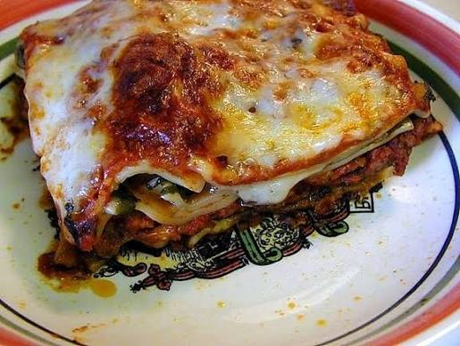

Les meilleur lasagne du monde

Découvrez la véritable recette des lasagnes à la bolognaise, un pilier incontournable de la cuisine familiale italienne qui séduit par sa générosité. Ce plat réconfortant repose sur l'équilibre parfait de trois préparations superposées avec soin : des plaques de pâtes fondantes, une sauce bolognaise maison riche en viande de bœuf mijotée à la tomate, et une sauce béchamel onctueuse subtilement parfumée à la noix de muscade. Le tout est couronné d'une généreuse couche de fromage qui fond et dore au four pour offrir une croûte croustillante irrésistible.
Dans une grande sauteuse, faites chauffer l'huile d'olive pour y faire suer l'oignon et l'ail pendant 3 minutes. Ajoutez la viande hachée et saisissez-la en la séparant à la spatule. Une fois colorée, versez la pulpe de tomates et ajoutez les herbes de Provence. Salez, poivrez, puis couvrez et laissez mijoter à feu doux pendant 20 minutes en remuant de temps en temps.
Dans une casserole, faites fondre le beurre à feu doux. Ajoutez la farine d’un coup et mélangez énergiquement au fouet pendant 1 à 2 minutes pour cuire la farine (sans la laisser brunir). Versez le lait petit à petit tout en fouettant continuellement pour éviter les grumeaux. Laissez épaissir sur feu moyen sans cesser de remuer. Retirez du feu, salez, poivrez et ajoutez la noix de muscade.
Préchauffez votre four à 180°C (thermostat 6). Huilez légèrement un grand plat à gratin.
Enfournez pour 35 à 40 minutes. Le dessus doit être bien doré et bouillonner sur les côtés.
Astuce du chef : Laissez reposer les lasagnes 10 à 15 minutes hors du four avant de les couper. Les couches vont se figer légèrement, ce qui permettra de servir des parts nettes qui ne s'effondrent pas.
Home